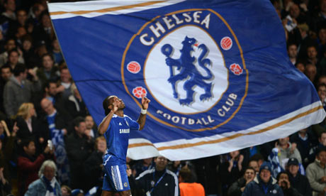

Football, or Soccer, is honestly more than a hobby- it's my passion; plain and simple. If I could, I would be a professional travelling Chelsea supporter. But, alas, I haven't struck gold, created the wonder program, or won the lottery. Until any of this happens, I'll just have to be content with going down the pubs and supporting Chelsea.